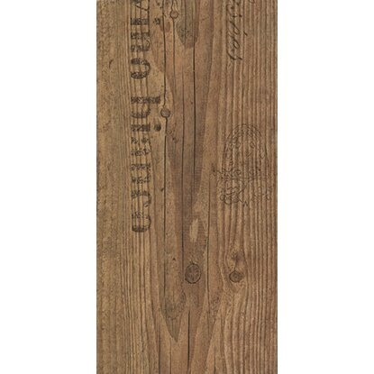

Kiemelt festék

Héra falfesték belső fehér 2 l
Magas fehérségű, kiváló fedőképességű, könnyen eldolgozható beltéri falfesték, mely Aquakolor színezőpasztával színezhető. Festés előtt Héra Falfix beeresztő használata ajánlott. Kiadósság: 9 m2/l/réteg. A felvitelt követően 2 h elteltével festhető át. Felvitele 2-3 rétegben javasolt.
RészletekKiemelt padló
Laminált padló Comfort 7 mm toscana flair
Toscana flair-színű laminált padló, mely kiválóan alkalmas minden lakóhelyiségbe, valamint a mérsékelten használt ipari helyiségekbe is. Az enyvmentes lerakás akadálytalan, tiszta munkavégzést tesz lehetővé. Igénybevételi osztály: 23/31. Méret: 193 mm x 1380 mm.
RészletekKiemelt termékek

Diszperziós falfesték beltéri hófehér 14 l
Kiadósság: 14 l kb. 125 m2. Magas fedőképességű és fehérségű diszperziós festék. Jó páraáteresztő, kiadós. Színezhető Classic színezőfestékkel.
RészletekLaminált padló fenyő 8 mm
Mérete: 1380 mm x 193 mm, és 8 mm vastag fenyő színű laminált padló, amely otthoni és irodai padlók burkolására is alkalmas. A padló AC4/32 kopásállóságú, és 8 mm-es HDF hordozóréteggel van ellátva. A csomag tartalma: 2,3971 m2.
Részletek
Csempefesték, fehér, fényes, 750 ml
Ez a csempefesték egy oldószertartalmú, aromamentes speciális festék beltéri használatra, amely falicsempék tartós fehér alapozására és fedőbevonataként alkalmazható pl. a konyhában, fürdőben és WC-ben.Ezzel a csempefestékkel könnyű dolgozni, kiválóan tapad, nedvességálló, és a teljes száradás után a felület ellenálló és ragyogóan fényes lesz. Tartalma kb. 8 m2-re elegendő.
Részletek